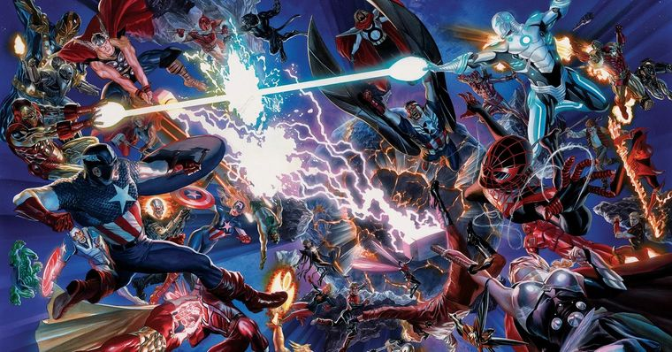

Na fase 4 do Universo Marvel foi introduzido o Multiverso, onde as chamadas “realidades paralelas” interagem entre si. Visível na série Loki, no filme que será lançado do homem aranha, Homem-Aranha, sem volta para casa, e Doutor Estranho no Multiverso da Loucura.